Home
Campaign Journal
Ecologist Notes
Characters
Maps
Tartarus Bahia
A Campaign
0| The Turtle Festival
1| Blessing of the Tortle
2| Beneath the Mayor Lair
3| Acclimating to New Waterbreak
4| Two Dishes and a Governor
5| A Beast's Rampage
6| Rugged Mountains, Soft Personalities
7| An Ancient Beast, The Royal Ludroth
8| Fraternal Genesis and Dreamwolves
9| Zambales and the Badly Burned
Narrowly escaping the dreamscape labyrinth, our adventurers have discovered a subterranean passage. Lined along it's dark walls are deposits of mithril and moonstone, and at the other end lies the comforting glow of the moon itself.
